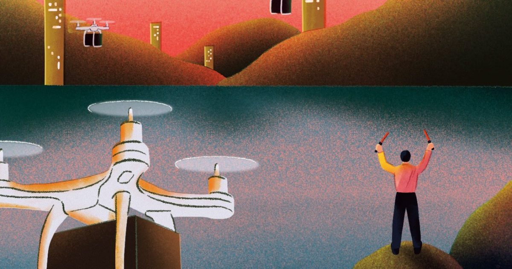

Должности будущего: Авиадиспетчер доставки беспилотников
В тот момент, когда Тревор Вишневски услышал, что дроны доставляют пиццу и суши по его району в Техасе, он принял решение.
«Это было очень увлекательно», - говорит он.
«Я просто сразу захотел быть частью этого.« Вишневский теперь является RPIC, или «дистанционным пилотом», в компании под названием FlyTrex.
RPIC - это...